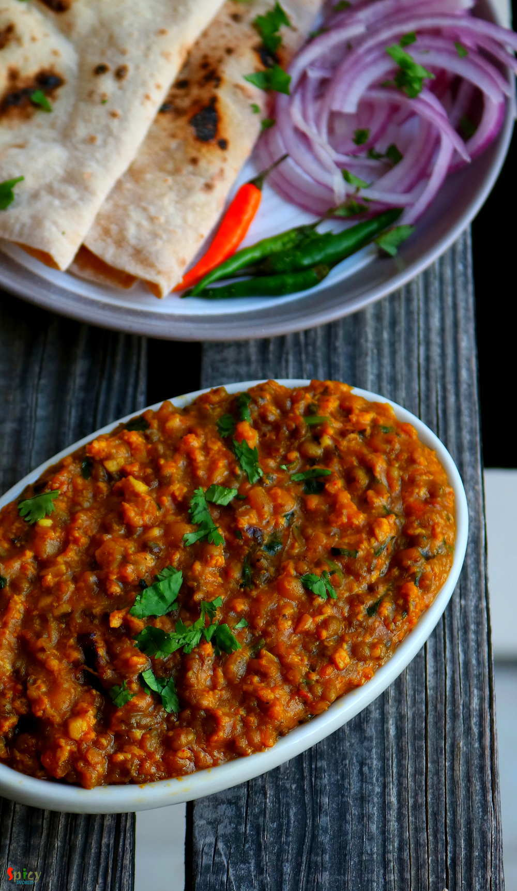

Simple and Easy Recipes
Dhaba style Egg Tadka Daal / Dim Torka
© 2016 Spicy World, Published on: Dec 4, 2018
'Torka-ruti' has always been a great favorite of mine. It's great with any type of bread like naan, tandoori roti, lachha paratha ... but with plain chapati / roti, the pair becomes heavenly. I have already posted some recipes on 'dhaba style' but the most popular and well known recipe is 'dim torka' or 'whole moong daal with scrambled egg'. When they serve this dish with raw onion chunks, green chilies and pickle, your appetite will increase to double for sure. From younger to elder, everyone is a fan of this dish. Make this easy recipe in your own kitchen and enjoy a great dinner with your family.

Ingredients
- Half cup of whole moong (green) lentil and 1/4th cup of toor daal.
- 2 eggs.
- 1 medium and 1 small onions finely chopped.
- 2 Teaspoons of ginger and garlic paste.
- 1 big tomato chopped.
- Finely chopped (2 inches ginger, 3 big cloves of garlic, 4 green chilies).
- Spice powder (1 Teaspoon roasted cumin powder, 2 Teaspoons roasted coriander powder, 2 Teaspoons turmeric powder, 2 Teaspoons red chili powder, 1 Teaspoon of kashmiri red chili powder, 1 Teaspoon of garam masala powder, 1 Teaspoon of chaat masala powder).
- 2 Teaspoons of dry fenugreek leaves.
- A handful of chopped coriander leaves.
- 1/4th cup of cooking oil.
- 2 Tablespoons of Sunrise Tadka Masala powder. (optional)
- Salt and sugar.
- Water.
- 4 Tablespoons of gravy from mutton or chicken curry.


Steps
Wash two types lentils with water very well and soak them for at least 5 hours.
Heat 3 Tablespoons of oil in a pressure cooker. Add 1 chopped onion, fry for 3-4 minutes.
Then add ginger garlic paste and cook for 2 minutes. Next add 1 Teaspoon of each turmeric powder and red chili powder. Mix well for 2 minutes.
Then add the soaked and drained daal, mix for 3 minutes. Add 1 cup of water, some salt and a pinch of sugar. Mix well, cover the cooker with lid and cook until 4-5 whistles come, then let the pressure release on its own.
Open the lid, mash the daal little bit with the back of your spatula and keep it aside.
For the tadka, heat the remaining oil in another pan. Fry 1 small finely chopped onion for 3 minutes on high flame.
Add chopped ginger, garlic and green chilies. Fry for 2 minutes.
Add chopped tomatoes, cook for 2-3 minutes on high flame.
Add 1 Teaspoon of each turmeric powder, red chili powder, cumin powder, coriander powder and kashmiri red chili powder. Mix well for 2 minutes.
Now add the 2 beaten eggs, immediately stir them on medium flame with a spatula for 2 minutes. Do not cook them long otherwise eggs will become rubbery.
Then add cooked daal or lentils. Mix well for another 5 minutes.
If it becomes dry add some warm water. Then add the gravy from mutton or chicken curry. Keep some gravy in refrigerator when (within a week) you prepare them, microwave it for 2 minutes, then add to the daal tadka, mix well for 2 minutes. This addition will make a lot of difference in taste.
Now add the sunrise tadka masala, crush the fenugreek leaves within your palms and add in the daal along with garam masala powder, chaat masala powder. Mix well for 2 -3 minuteson medium flame.
Lastly add chopped coriander leaves and 2 chopped green chilies, mix and turn off the heat.
Let it rest for few minutes, then serve.
Your egg tadka dal is ready ...
Serve this hot with roti or naan ...
")